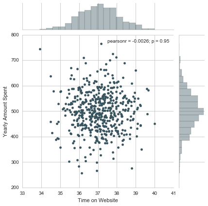
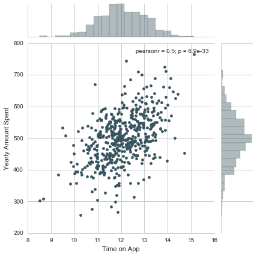
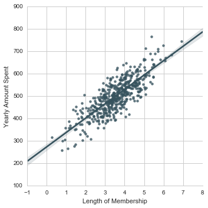

Linear Regression Ecommerce Consultation
Assume you just signed a contract with an E-commerce company based in Munich. Customers can buy clothes either on a mobile app or a website for the clothes they want. The company has also a styling store where customers can come and have sessions with a personal stylist.
The company is trying to decide whether to focus their efforts on their mobile app experience or their website. Your job is to help them figure it out.
The customer data presented here is fake. So don’t worry about the emails or credit card numbers.
Let’s start!
Importing the necessary libraries
** set %matplotlib inline to see the graphs on the notebook**
import pandas as pd
import numpy as np
import matplotlib.pyplot as plt
import seaborn as sns
%matplotlib inlineGet the Data
Get the Data
The data is given to us by the company in a csv format. It has Customer info, such as Email, Address, and their color Avatar. It also has numerical value columns:
Avg. Session Length: Average session of in-store style advice sessions. Time on App: Average time spent on App in minutes. Time on Website: Average time spent on Website in minutes. Length of Membership: How many years the customer has been a member.
customers = pd.read_csv("Ecommerce Customers")Getting to know the data:
customers.head()| Address | Avatar | Avg. Session Length | Time on App | Time on Website | Length of Membership | Yearly Amount Spent | ||
|---|---|---|---|---|---|---|---|---|
| 0 | mstephenson@fernandez.com | 835 Frank Tunnel\nWrightmouth, MI 82180-9605 | Violet | 34.497268 | 12.655651 | 39.577668 | 4.082621 | 587.951054 |
| 1 | hduke@hotmail.com | 4547 Archer Common\nDiazchester, CA 06566-8576 | DarkGreen | 31.926272 | 11.109461 | 37.268959 | 2.664034 | 392.204933 |
| 2 | pallen@yahoo.com | 24645 Valerie Unions Suite 582\nCobbborough, D... | Bisque | 33.000915 | 11.330278 | 37.110597 | 4.104543 | 487.547505 |
| 3 | riverarebecca@gmail.com | 1414 David Throughway\nPort Jason, OH 22070-1220 | SaddleBrown | 34.305557 | 13.717514 | 36.721283 | 3.120179 | 581.852344 |
| 4 | mstephens@davidson-herman.com | 14023 Rodriguez Passage\nPort Jacobville, PR 3... | MediumAquaMarine | 33.330673 | 12.795189 | 37.536653 | 4.446308 | 599.406092 |
customers.describe()| Avg. Session Length | Time on App | Time on Website | Length of Membership | Yearly Amount Spent | |
|---|---|---|---|---|---|
| count | 500.000000 | 500.000000 | 500.000000 | 500.000000 | 500.000000 |
| mean | 33.053194 | 12.052488 | 37.060445 | 3.533462 | 499.314038 |
| std | 0.992563 | 0.994216 | 1.010489 | 0.999278 | 79.314782 |
| min | 29.532429 | 8.508152 | 33.913847 | 0.269901 | 256.670582 |
| 25% | 32.341822 | 11.388153 | 36.349257 | 2.930450 | 445.038277 |
| 50% | 33.082008 | 11.983231 | 37.069367 | 3.533975 | 498.887875 |
| 75% | 33.711985 | 12.753850 | 37.716432 | 4.126502 | 549.313828 |
| max | 36.139662 | 15.126994 | 40.005182 | 6.922689 | 765.518462 |
customers.info()<class 'pandas.core.frame.DataFrame'>
RangeIndex: 500 entries, 0 to 499
Data columns (total 8 columns):
Email 500 non-null object
Address 500 non-null object
Avatar 500 non-null object
Avg. Session Length 500 non-null float64
Time on App 500 non-null float64
Time on Website 500 non-null float64
Length of Membership 500 non-null float64
Yearly Amount Spent 500 non-null float64
dtypes: float64(5), object(3)
memory usage: 31.3+ KB
Exploratory Data Analysis
Let’s explore the data!
Compare the Time on Website and Yearly Amount Spent columns to see whether the correlation make sense.
sns.set_palette("GnBu_d")
sns.set_style('whitegrid')# More time on site, more money spent.
sns.jointplot(x='Time on Website',y='Yearly Amount Spent',data=customers)<seaborn.axisgrid.JointGrid at 0x120bfcc88>

** Do the same analysis but with the Time on App column instead. **
sns.jointplot(x='Time on App',y='Yearly Amount Spent',data=customers)<seaborn.axisgrid.JointGrid at 0x132db5908>

** Use jointplot to create a 2D hex bin plot comparing Time on App and Length of Membership.**
What about Time Spent on App vs. Lenght of Membership?
sns.jointplot(x='Time on App',y='Length of Membership',kind='hex',data=customers)<seaborn.axisgrid.JointGrid at 0x130edac88>

Ok, maybe it is better to see the whole picture by considering the relationships across the entire data set.
sns.pairplot(customers)<seaborn.axisgrid.PairGrid at 0x132fb3da0>

Based off this plot, Length of Membership looks to be the most correlated feature with Yearly Amount Spent. Let’s create a linear model to explore it deeper.
# Length of Membership sns.lmplot(x='Length of Membership',y='Yearly Amount Spent',data=customers)<seaborn.axisgrid.FacetGrid at 0x13538d0b8>

Training and Testing Data
Now that we’ve completed the EDA we can move on to the actual analysis.
Set features of the customers and the label: “Yearly Amount Spent” column. Split the data into training and testing sets.
y = customers['Yearly Amount Spent']X = customers[['Avg. Session Length', 'Time on App','Time on Website', 'Length of Membership']]from sklearn.model_selection import train_test_splitX_train, X_test, y_train, y_test = train_test_split(X, y, test_size=0.3, random_state=101)Training the Model
from sklearn.linear_model import LinearRegressionlm = LinearRegression()lm.fit(X_train,y_train)LinearRegression(copy_X=True, fit_intercept=True, n_jobs=1, normalize=False)
Now, it is time to see our coefficients:
# The coefficients
print('Coefficients: \n', lm.coef_)Coefficients:
[ 25.98154972 38.59015875 0.19040528 61.27909654]
Predicting Test Data
Let’s see how we perform on the test data and evaluate our model.
predictions = lm.predict( X_test)plt.scatter(y_test,predictions)
plt.xlabel('Y Test')
plt.ylabel('Predicted Y')<matplotlib.text.Text at 0x135546320>

Evaluating the Model
We’ll evaluate our model performance by calculating the residual sum of squares and the explained variance score (R^2).
Calculate the Mean Absolute Error, Mean Squared Error, and the Root Mean Squared Error.
# calculate these metrics by hand!
from sklearn import metrics
print('MAE:', metrics.mean_absolute_error(y_test, predictions))
print('MSE:', metrics.mean_squared_error(y_test, predictions))
print('RMSE:', np.sqrt(metrics.mean_squared_error(y_test, predictions)))MAE: 7.22814865343
MSE: 79.813051651
RMSE: 8.93381506698
Residuals
Seems like we have a very good model with a good fit. Let’s quickly explore the residuals to make sure everything was okay with our data. We want to make sure the residuals looks normally distributed.
sns.distplot((y_test-predictions),bins=50);
Concluding Remarks
Our original question was, should the company focus its efforts on mobile app or website development? Or maybe this decision doesn’t even really matter, and Membership Time is what is really important. The coefficients can give us an idea.
** Recreate the dataframe below. **
coeffecients = pd.DataFrame(lm.coef_,X.columns)
coeffecients.columns = ['Coeffecient']
coeffecients| Coeffecient | |
|---|---|
| Avg. Session Length | 25.981550 |
| Time on App | 38.590159 |
| Time on Website | 0.190405 |
| Length of Membership | 61.279097 |
Interpreting the coefficients:
Holding all other features fixed: A 1 unit increase in Avg. Session Length is associated with an increase of 25.98 total dollars spent. A 1 unit increase in Time on App is associated with an increase of 38.59 total dollars spent. A 1 unit increase in Time on Website is associated with an increase of 0.19 total dollars spent. A 1 unit increase in Length of Membership is associated with an increase of 61.27 total dollars spent.
Now there are two different approaches to this result. As the data scientist, our suggestion would depend on what does the management wants. If the company wants its website to catch up to the performance of the mobile app, then it should focus on that. Or the company can focus on the development of the mobile app since it is already performing well.